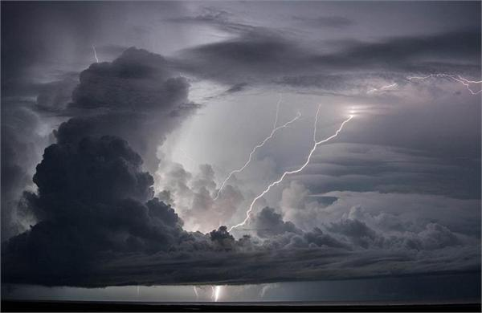
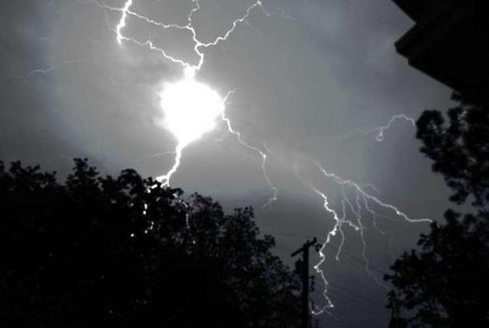
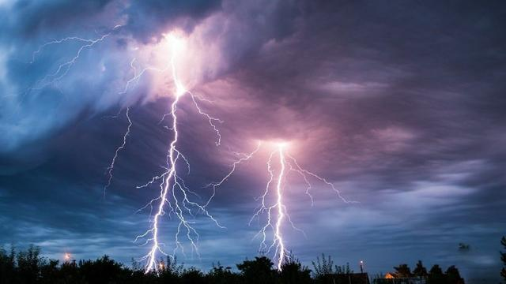

地光形形色色的形态，归结起来可分为闪电状、朦胧弥漫状(片状)、条带状、柱状、探照灯状、散射状和火球状等等。就光的颜色来说，有红、橙、黄、绿、蓝等，但以蓝色和红色较多，黄色次之。一般地说，片状光、带状光，以蓝色居多；而火球、火团、火焰、火柱多为红色、红黄色和白色。不过，这不是绝对的，有时地光的颜色还随时间变化。
疑问
地震光至今没有一种大家都接受的科学解释，主要的解释是加利福尼亚大学物理学家弗里德曼·弗罗因德的想法：在地震前形成的巨大压力导致火成岩暂时成为“P形”半导体，它们包含能传导电荷的“空穴”，由于挤压过程导致岩石中“过氧族”物质的电离，一些电荷将会达到岩石表面，是这些电荷的聚集，产生了奇怪的发光现象。
尽管这一假说成为当今的主流说法，但是，地面的岩石是不会受到他所说的那么大压力的，这种“压电效应”不会在地表产生，地表的空气怎么会被电离呢？
要知道，一些强震释放出的能量，相当于千万吨级当量的核弹爆炸时释放的能量，自然界只有雷电才可以与之相提并论，怎么可以用地层断裂来引人入“谜”呢？可以说，关于构造地震的假说都是不完美的，很多问题根本不能用地层的机械运动来说明。
产生原因
想找到地震光产生的原因，必须弄清地震发生的原因。
很多地震学家早就发现地震前的一些怪异现象无法用地层断裂来解释。可是传统“权威”理论的桎梏使很多人失去了突破的勇气，因而放弃了对破坏性地震的本质作更深入的探索。
还有令人莫名其妙的“水库地震”，都无法用现有的地震理论来解释。这种地震和水库蓄水的过程有着密切的联系，水库刚积水时，无震或发生小震，水满后发生大震，以后逐渐减弱甚至消失。1962年3月19日发生在我国新丰江的6.4级地震就是最大的水库地震之一。
与此相类似的还有注水地震：将水注入地下深处，同样会发生地震。比如，美国科罗拉多州首府丹佛的东北部，一座军工厂为处理废水，凿了一口3614米的深井，开始使用后就发生了地震，而且，地震的发生次数随着注水的增减而增减。
地震为什么与水休戚相关呢？水是造成“构造地震”的主要原因吗？
如果我们明白地壳下存在巨能电场，那么，一切谜团都解开了。
地核在巨大的压力和高温中，物质中的电子会加速逃逸，并分布在地层下的低温面上，这种“温差发电”原理使地层下面存在着大量的自由电子，这些电子形成了一个负电层。在这个负电层电场的作用下，地壳中的某些导电率较高的地层会因极化作用，在下表面积累一定的正电荷，上表面积累一定的负电荷。如果相邻的地层间有一定的“绝缘”，那么，这两个地层会产生巨大的电势（电压），这个电压达到一定值时会产生剧烈的放电现象，将绝缘层击穿。这种电势的产生与地层物质的导电率有关（比如：岩层的湿度等），它和云层中雷电形成一样，严格受导电率的影响。
水在岩层中渗透时，会溶解一些物质而增加导电率，因此，我们就会明白为什么会发生水库地震和注水地震。
破坏性地震应该理解为地壳中的雷电现象。
在两个地层的电势形成过程中，地表层中会有电流产生。地面会出现重力失常，地磁失常。个别地层中的局域电场会对其同性电场产生斥力，这种力足够大时，地面会发生倾斜、隆起，水位变化；两个异性电场的地层间由于引力会产生巨大的压力，地层中的气态物质会受压被排出地层，如：氡等，造成地氡和水氡的增加，并引起井水冒泡、浑浊，甚至在空中形成“地震云”；一些对重力和地磁变化敏感的动物会感受到灾难的迫近，如：家畜不安；巨大的电场放电现象伴生出闪电一样的地光，如：放出蓝光、红光；云层中的正负电平衡被破坏，天气受影响，如：出现阴雨天气。剧烈的放电现象发生时，巨大的能量会破坏地层结构，并且以横波和纵波的形式向四周传播。
可见，构造地震就是一种地下的雷电现象。
古代认识
其实，这个原理早在中国古代就已经被认识到了，在古人眼中，“震”是什么？震就是“雷电”，“地震”就是“地下雷电”的意思。在《周易》中就有许多关于“震”的卜辞，比如，“震遂泥”的意思就是“雷电坠落到地上”。在《诗经》中，“烨烨震电”的“震”也是指雷电。
翻开《国语·周语》我们会找到这样一句话：“阳伏而不能出，阴迫而不能蒸，于是有地震。”
意思是，阳气潜伏于下不能出来，阴气压迫阳气不能蒸腾，所以有了地震。这是以阴阳二气的矛盾来解释地震现象的。 这种朴素的唯物主义解释足以让我们许多人茅塞顿开。如果我们能够认清古代人所说的阴气和阳气指的是什么，那么，许多人都会恍然大悟。
古人所说的阴气和阳气与我们现在所说的负电和正电竟然具有异曲同工之妙，也许我们祖先所说的阴气与阳气的本义，就是现代人所说的负电与正电。
古人的关于地震的解释是很有启发性的，聪明的中国古代思想家早在几千年前就发现了地震的本质，但遗憾的是封建社会对科技的扼杀使人们放弃了许多真实的东西。
地层与地层间积蓄着正电和负电——这正是古人说的“阳伏而不能出，阴迫而不能蒸”啊！
是地震导致了地壳的运动，而不是地壳运动造成了地震。
由此我们可以看出，地层与地层间的相对电压才是地震产生的原因，而我们地震部门监测“地电”的选取位置却是在同一地层中的几个点上，同一地层中的“地电”变化是不明显的，用此方法监测地震是无效的。
我们可以通过在地层中建立“避震机制”，或通过引发“小震”来防止“破坏性地震”的发生。
神秘闪光
这些奇怪的发光体经常被飞碟爱好者当作UFO来研究，但更多的研究表明，这些发光体与地震息息相关，每当某地频频报告发现UFO后不久，该地就会发生地震。
在我国唐山，1976年的一个夜晚，一位护士值夜班，由于闷热，到屋外乘凉，天本是阴沉沉的，突然出现一片奇形怪状的云，说红不红，说紫不紫，刚回头又看到西北方的天特别亮，像失了火；郊区一农民在野外看到一个大火球从地下钻出来，通红刺眼，噼啪乱响，飞到半空中才灭；另外几个看瓜的农民，也同样看到距离他们约200米远的天空，忽然明亮起来，照得地面发白，西瓜地中的瓜叶、瓜蔓都清晰可辨；而唐山北部一个军营里，几个士兵发现地下的一堆钢筋，莫名其妙地迸发出闪亮的火花。就在这些奇怪现象不断发生的时候，第二天凌晨，就发生了里氏7.8级大地震，24万人死于非命，整个城市被夷为平地。有关这些神秘闪光的故事在当地流传开了，但这些神秘的闪光跟地震有关吗？或者只是惊恐的民众编造的谣言？
地震前的预兆
人们在地震前看到奇怪的光不是第一次了，有关地震发光现象的记载古已有之。在日本古代的一首诗歌中就有这样的句子："地球温柔地对大山说到，震动吧并发出光照耀天空。"历史上，有很多目击者报告，他们在地震前几天或地震期间看到橘红色的灼热光、蓝白色的冷光、火球或闪光。早在1755年，把远在瑞典教堂里的钟晃得叮当乱响的里斯本地震之后，哲学家康德就记载了这些警告性迹象："在地震前8天，卡迪斯附近的地面上爬满了大量从泥土中钻出来的蚯蚓。其他几次地震的前兆是天空出现强烈的闪电，人们注意到动物都表现出惊恐不安。"1968年，在日本松代发生一系列地震期间，在垣冈地震观察站的野水裕拍摄到第一批"地震光"照片。有些显示天空出现红色条纹，就像低悬的北极光；有些看上去像远处低垂的蓝色曙光。1995年日本的神户大地震前，也有居民报告说，他们看到了一团橘黄色的闪光。
1999年的一天夜里，在土尔其的伊茨米特市上空出现了一个漂浮的球状的发光体。就在第二天，一场剧烈的地震袭击了这一城市，有1.5万人在这次地震中丧生。
不管是否神秘，人们多次看到地震光，证实地震光是存在的。每当地震发生前的几个月，地球深处的岩石受挤压，会产生一种圆球状的发光体，并窜出地面升到空中。它们大的如房屋，小的如篮球，前进路线飘忽不定，并发出五颜六色的光芒。
这些奇怪的发光体经常被飞碟爱好者当作UFO来研究，但更多的研究表明，这些发光体与地震息息相关，每当某地频频报告发现飞碟后不久，该地就会发生地震。如美国新墨西哥州在1915至1952年间曾多次出现UFO，此后不到二年，该地区就连续发生4至5级地震；而美国洛杉矶大地震前几个月，该地区上空也多次出现UFO。实际上这些UFO均为"地震光球"。
地震光意味着什么
但长期以来，科学家们都不知道地震光到底意味着什么，也不知道地震光形成的原因。地震学家多年来一直在寻找可靠的地震预兆。这些地震光可能是寻找地震预兆的关键吗？
早在20世纪90年代初，俄罗斯和中国的科学家就声称，已经公布的美国气象卫星资料显示，在地震前几个星期，地震周围地区会出现红外线效应，但主流地质学界对这种说法不以为然，认为只是偶然的巧合罢了。
几年过去后，越来越多的研究表明，地震前的这种红外线效应确实存在，主流地质学界的思想开始转变，美国航天局已经开始利用气象卫星和MODIS研究卫星研究地震光。
对于地震光和它所产生的红外线效应，最近，美国的地球物理学家弗里德曼·弗罗恩德提出了一个非常值得研究的观点。他认为，地球板块彼此挤压在强大的应力作用下推动岩石，当被应力推出的板块在压力之下发出震颤，在其之上的地壳发生震动，这就是地震的成因。
根据这个理论，在地震出现之前构成的应力改变了火成岩（一种地球深处的熔岩物质变硬时形成的岩石）中的矿物纹理形状，并暴露出它们的过氧链。过氧链是指一对氧离子结合在一起。当地下的过氧链破裂时，带负电荷的氧离子被留在岩石中，而释放出的正电荷开始传播。当正电荷扩展时，它们把岩石作为一个暂时的能使其导电性能变化的半导体。有一些四处游荡的正电荷跑到地表，在那里，它们收缩成一个很薄的层，该层使其上层的空气电离，产生出可见光或红外线放射。
山区更易看到地震光
根据弗罗恩德的理论，这种光的发射应该出现于多岩的岩石结构和山峰，因为那里大多数正电荷都集中在那里。正电荷是否能产生可见光或红外线放射，取决于有多少电荷到达岩石表面，并且也取决于岩石表面的地貌。在山峰或岩崖最容易出现离子化，从而产生可见光，因为在这些地方岩石表面比较大，电荷层比较薄。同样多的电荷，电荷层越薄，在电荷层中形成的电场就越高，就更容易使空气离子化。这就可以解释为什么在山区更容易看到地震光。弗罗恩德还认为，有一些正电荷应该再次与地面电子结合，并再将它们返回过氧群。这种重新结合会释放出远红外辐射--一种人眼看不到的电磁辐射。这也与地震观测相符。这种远红外作用在地震爆发前几个星期就能靠卫星检测到。
弗罗恩德的理论现在逐渐开始得到人们的支持。但是科学并不接受没有可靠确凿证据的理论，为了证明在大压力下的岩石真能发出可见光和远红外辐射，弗罗恩德作了一个实验，他拿了几块火成岩，例如花岗岩，用很大的压力压碎它们，这些压碎的岩石便释放出可见光并也产生红外辐射。弗罗恩德的实验并不是每个人都信服，有些人指出地壳充满着水是一个好导电体，潮湿的岩石会把正电荷带回它们初始的地方。但弗罗恩德反驳说，虽然是导体，但水正有相反的作用，可能帮助把氧离子的正电荷带到地表。
许多地质学家怀疑，在地下几百公里处释放的正电荷一点不被吸收而传播到地表。但是，弗罗恩德的实验结果表明，正电荷能够通过坚硬的岩石至少能传播25厘米，这对原子大小的东西来说，这是一个非常大的距离。
目前，弗罗恩德还在寻找其他证实自己观点正确的方法。最后让这种理论告诉我们，它是可信的，同时又是可行的检测和预报地震的方法。
现在的地震预测模式利用地震信息，只能预测今后几十年内可能发生地震的可能性，如美国地震局预测，旧金山湾在2032年前发生里氏6.7级地震的可能性是67％，这与老百姓所要求的地震预测相差甚远。如果神秘的地震光证实是可靠的地震预兆，那么恼人的地震预测问题就能比较好的解决了，当我们就看到地平线上出现这种神秘光时，就应该赶快收拾行装出去躲避。